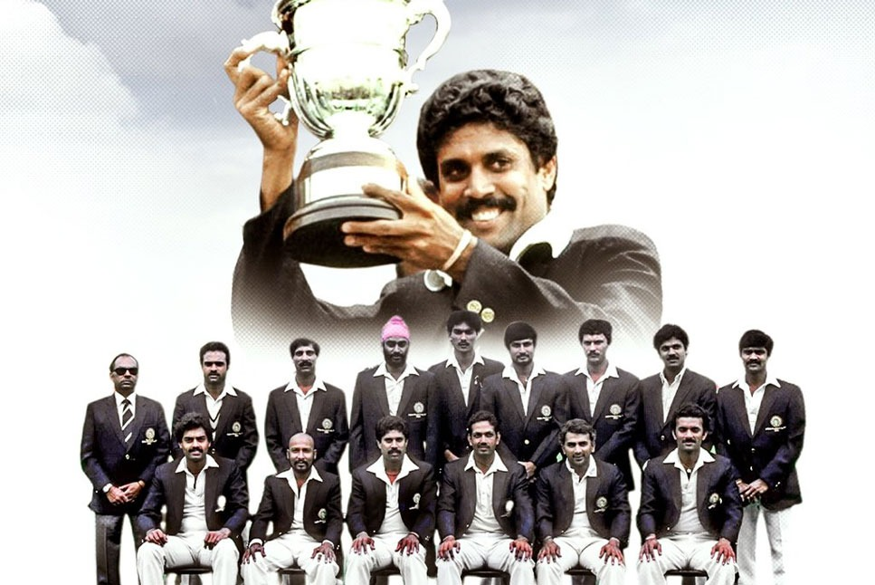
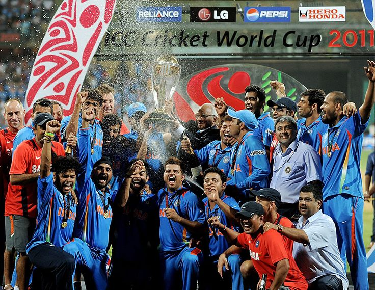
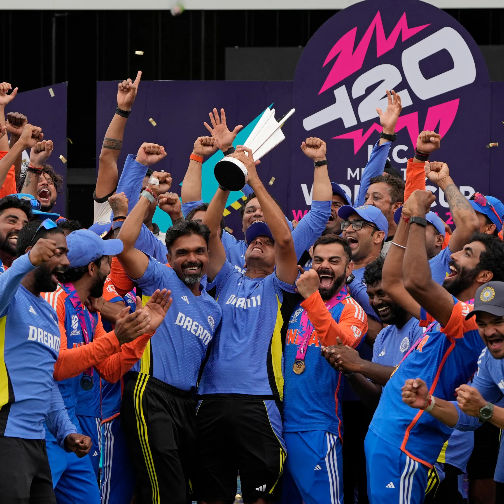

The Indian
Cri ket
Team – A Powerhouse of Talent and
Determination 🇮🇳🏏
ket
Team – A Powerhouse of Talent and
Determination 🇮🇳🏏
🔥 1983 World Cup: India’s Historic Rise to Cricketing Glory!

India’s remarkable victory in the 1983 Cricket World
Cup marked the beginning of a new era in Indian cricket. Led by the
fearless Kapil Dev, the underdog
Indian team stunned the world by defeating the mighty West Indies in
the final at Lord’s . India posted a modest total of 183 runs, with
Kris Srikkanth’s crucial 38 being the highest contribution . However, the real magic unfolded in the second innings as India’s
relentless bowling attack, led by Madan Lal and Mohinder Amarnath,
dismantled the formidable West Indies batting lineup.
Kapil Dev’s iconic running catch to dismiss Viv Richards turned the
match in India’s favor , and Amarnath’s all-round brilliance earned him the Man of the Match
award. With a stunning 43-run victory,
India lifted their first-ever World Cup , shocking the
cricketing world and inspiring future generations. This triumph was more
than just a win; it ignited India’s passion for cricket, transformed the
sport in the country, and laid the foundation for India’s dominance on
the global stage.
1983 will forever remain the moment that changed Indian cricket
history!
.🇮🇳🏆🔥
🔥 2011 World Cup Glory: India’s Legendary Victory That United a Nation!
India’s iconic triumph in the 2011 ODI World Cup was
a historic moment that ended a 28-year-long wait for the prestigious
trophy. Gautam Gambhir’s gritty 97 and MS Dhoni’s unforgettable 91 off
79 balls* guided India in a high-pressure chase of 275 runs against Sri Lanka in
the grand final. The legendary six by Dhoni sealed the victory in style,
etching an unforgettable memory in the hearts of millions. Sachin
Tendulkar’s World Cup dream finally came true, with the team dedicating
the win to him.
Yuvraj Singh’s all-round brilliance throughout the
tournament, despite battling health issues, earned him the Player of the
Tournament title.
Zaheer Khan’s fiery opening spells and Harbhajan
Singh’s crucial breakthroughs played a key role in India’s dominant
campaign. Captain MS Dhoni’s calm leadership was instrumental in shaping
the team's success, leading from the front when it mattered most. The
victory united a nation, with celebrations flooding the streets as
India became the first team to win a World Cup on home soil . This triumph remains a symbol of determination, teamwork, and India’s
dominance in world cricket, forever cherished by fans across the
globe.🇮🇳🏆🔥

🔥 India’s Unstoppable Glory: A Historic Triumph in T20 World Cup 2024!

India’s glorious victory in the T20 World Cup 2024 was a moment of
immense pride, marking their second title win in the tournament’s
history.
Virat Kohli’s masterful 76 off 59 balls anchored
India’s innings, while
Axar Patel’s crucial 47 runs provided the much-needed
boost to reach 176/7, the
highest total ever in a T20 World Cup final . The
bowlers delivered under pressure, with Jasprit Bumrah’s precision and
Hardik Pandya’s heroic last over ensuring a 7-run win over South
Africa.
India remained unbeaten throughout the tournament, a testament to their
dominance. Rohit Sharma’s brilliant captaincy played a pivotal role in
shaping this campaign, and the victory was made even more emotional as
Virat Kohli, Rohit Sharma, and Ravindra Jadeja announced their T20I
retirements , ending an era on the highest note. Recognizing this monumental
achievement, BCCI honored the players with diamond rings, a fitting
tribute to their excellence. This triumph stands as a symbol of
resilience, teamwork, and
India’s undeniable supremacy in world cricket.
🇮🇳🏆🔥
Let me introduce some of the great players who served India.
Click Here